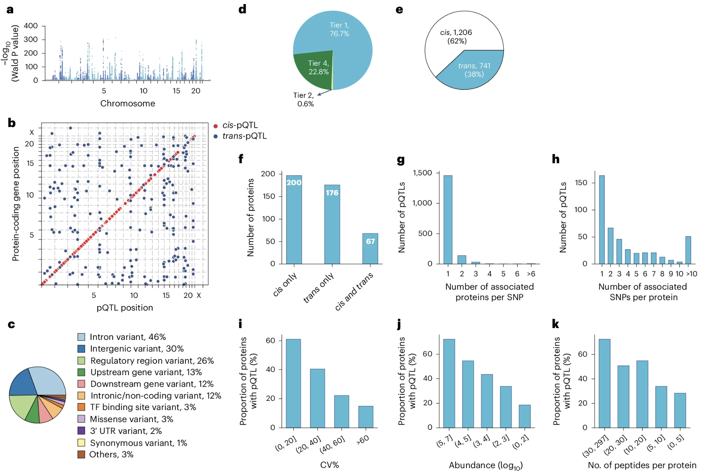
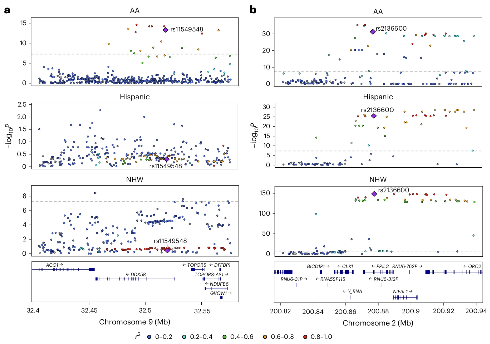

BSMS205 · Genetics · Final Lecture
QTLs
Chapter 30 · Part V · Functional Genetics
Today's central question
If you carry a variant,
how does it actually change
RNA or protein levels?
What QTLs are
- Quantitative Trait Locus = variant linked to a measurable trait
- eQTL · variant ↔ mRNA level
- pQTL · variant ↔ protein level
- The bridge from genotype to molecular phenotype
Roadmap for the final lecture
- How QTL mapping works · cis vs trans
- eQTLs and pQTLs · what each tells you
- Three landmark studies from 2025
- Caveats · what QTLs do not tell you
- Integrating with GWAS · finding causal genes
- The complete genetics framework
§ 1
How QTL Mapping Works
Three ingredients
- Genotype data · millions of SNPs per person
- Molecular phenotype data · RNA-seq for eQTL · mass spec for pQTL
- Statistical test · linear regression of trait on genotype
The additive model
| Genotype | Encoding | Expected effect |
|---|
| AA | 0 | baseline |
| AG | 1 | baseline + β₁ |
| GG | 2 | baseline + 2β₁ |
Cis-QTL vs trans-QTL
Cis
- Variant near the gene
- Within ±1 Mb
- Strong, easy to detect
- Usually a regulatory element
Trans
- Variant far away · different chromosome
- Weaker effects
- Often via a TF or signaling intermediate
- Harder to detect
Multiple testing
- Millions of SNPs × thousands of genes = billions of tests
- Most associations are noise
- Use FDR or permutation thresholds
- Large samples needed for trans-QTLs (~50,000+)
§ 2
eQTLs and pQTLs
eQTLs · genetic effects on RNA
- Most disease GWAS variants are actually eQTLs
- Don't change protein sequence · change expression level
- Tissue-specific · GTEx mapped 54 tissues
GTEx Consortium 2020, Science
pQTLs · genetic effects on protein
- Measured in plasma by mass spectrometry
- Protein is closer to phenotype than RNA
- Captures translation efficiency, stability, secretion
- Only 40 – 60% of eQTLs have a matching pQTL
Why eQTL and pQTL diverge
- Translation efficiency · some mRNAs translate more
- Protein half-life · some proteins degrade fast
- Post-translational modifications · alter activity, stability, location
- Secretion · cellular vs plasma protein
§ 3
Three Landmark Studies
Study 1 · Niu et al. 2025 · childhood pQTLs
- 2,147 children and adolescents · plasma proteomics
- 1,216 high-confidence proteins measured
- ~70% of proteins influenced by genetics, age, sex, or BMI
- 1/3 of proteins have at least one significant pQTL
Niu et al. 2025, Nature Genetics
Niu 2025 · genome-wide pQTL map

Most pQTLs are cis · in non-coding regulatory regions · only ~3% are missense.
Niu et al. 2025, Nat Genet. CC BY 4.0.
Study 2 · Hofmeister et al. 2025 · parent-of-origin
- UK Biobank · ~109,000 participants
- 14,000 known pQTLs tested for parent-specific effects
- 30+ significant POEs identified
- 40% of POEs are antagonistic · maternal vs paternal push opposite directions
Hofmeister et al. 2025, Nature
Study 3 · Wingo et al. 2025 · multi-ancestry brain pQTLs
- 1,362 brain donors · African-American, Hispanic, non-Hispanic White
- ~11,750 proteins quantified
- 858 fine-mapped causal pQTLs
- 119 pQTL-protein-trait triads link variants → protein → disease
Wingo et al. 2025, Nature Genetics
Wingo 2025 · ancestry-specific pQTLs

Some pQTLs are ancestry-specific · some are shared.
Wingo et al. 2025, Nat Genet. CC BY 4.0.
§ 4
Caveats
Caveat 1 · association is not causation
- QTL = correlation between variant and trait
- True causal variant may be in linkage disequilibrium
- Or the variant may act via an intermediate
- Need fine-mapping and functional validation
Caveat 2 · tissue and cell-type specificity
- QTLs are often context-dependent
- APOE eQTL active in liver · not the same elsewhere
- IL2RA eQTL only after cytokine stimulation
- Always check the right tissue · the right context
Caveat 3 · effect sizes are small
- Cis-eQTL: typically 5 – 20% of expression variance
- Trans-QTL: <1%
- pQTL: usually 1 – 5%
- Small effects · but they accumulate across thousands of variants
§ 5
QTL × GWAS ·
Finding Causal Genes
The integration workflow
- GWAS finds a disease locus (e.g. chr 19, Alzheimer's)
- eQTL / pQTL mapping shows the same variants affect APOE and CLU
- Colocalization · GWAS and QTL signals share a causal variant
- Strong evidence: APOE/CLU dysregulation mediates AD risk
Mendelian randomisation
Use genetic variants as instrumental variables.
Test whether changing a molecular trait causally affects disease risk.
- If raising APOE protein reduces AD risk → APOE is a drug target
§ 6
The Complete Framework
The full chain · variant to disease
DNA variant → RNA expression (eQTL) → Protein level (pQTL)
→ Pathway activity → Cellular phenotype → Disease risk
Course recap · Part IV
- Ch 20 · allele frequency — the fundamental statistic
- Ch 21 · population structure — why frequencies vary
- Ch 22 · linkage — Mendel to Morgan
- Ch 23 · recombination and haplotypes — how variants travel
- Ch 24 · VCF — how all of this becomes data
Course recap · Part V
- Ch 25 · forward genetics — phenotype to gene · GWAS · burden tests
- Ch 26 · reverse genetics — CRISPR toolkit · screens · rescue
- Ch 27 · CRISPRa therapy — SCN2A as the case study
- Ch 28 · gene regulation principles — promoters · enhancers · loops
- Ch 29 · regulation methods — RNA-seq · ChIP-seq · ATAC-seq · CUT&RUN
- Ch 30 · QTLs — connecting variant to molecular phenotype
What modern human genetics can now do
- Find variants associated with disease at population scale
- Determine which gene each variant regulates
- Determine in which tissue and cell type
- Test the gene's function with CRISPR
- Design therapy by adjusting expression of the right gene
§ 7
Summary
What to take away
- QTLs link variants to molecular phenotypes
- eQTLs and pQTLs · 40 – 60% concordance
- Most are cis · most non-coding · most tissue-specific
- Effect sizes small · but accumulate across the genome
- QTL + GWAS = causal gene identification
- Mendelian randomisation → causal inference for therapy
End of course
From A and T and G and C
to human disease.
BSMS205 · Genetics · 2026 Spring · 30 chapters complete.